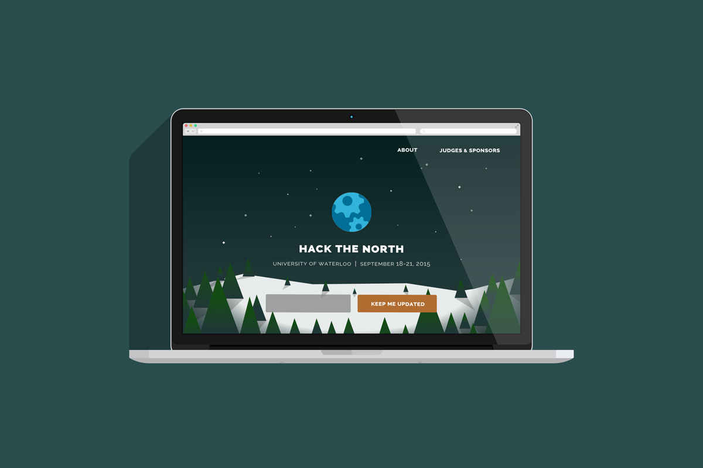
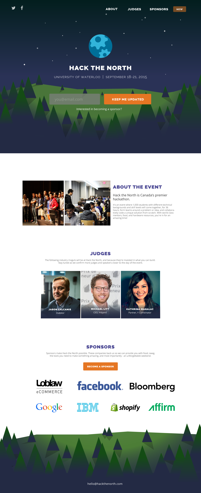

Providing hackers with the resources to be successful
Role
I'm currently working as a designer with the team that organizes Canada's largest hackathon at the University of Waterloo. Over the course of this upcoming year, I'll be able to have a visible impact on Hack the North's brand, as well as their web platform which enables hackers to sign up for the hackathon and provides applicable information to sponsors, community members, etc.
Currently Brewing
I thought I'd share this project with you as an insight into the types of processes that I employ when I get started with a project. I started with a deck to present to the organizers of Hack the North to provide my insights into the design. The deck presents breadth, not depth, and it's basically a quick iteration of all of the little bits of Hack the North's design, without any of the solutions proposed to be definitive.

Webpage
After doing an exploration of what design could mean for Hack the North, my first project was to design a front-facing webpage, located at hackthenorth.com. During this time, we decided to give the hackathon a brand identity. We played with the idea of a "wilderness adventure", because really - that's kind of what a hackathon is all about. Using only the available tools and supplies to persist, and learning new survival skills along the way. I'm really excited to carry on with the brand into designing the rest of the webpage experience, and in the artifacts we give to hackers when they arrive.
